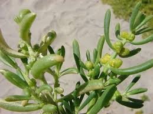

Bataceae
Saltwort Family / Beachwort Family
Bataceae is a small family containing a single genus, Batis, with only two species of succulent shrubs highly adapted to saline coastal environments (halophytes). These plants are characterized by opposite, fleshy leaves, inconspicuous unisexual flowers borne in fleshy spikes, and placement within the order Brassicales. They play an important role in stabilizing shorelines in tropical and subtropical regions.
Overview
The Bataceae family consists solely of the genus Batis, comprising two species: B. maritima, found widely in coastal Americas and the Pacific, and B. argillicola, restricted to northern Australia and southern New Guinea. These plants are quintessential halophytes, thriving in high-salinity environments like salt marshes, mangrove fringes, and tidal flats where few other vascular plants can survive. They often form dense, low-growing mats that help stabilize soil and provide habitat for coastal fauna.
Morphologically, they are succulent shrubs with distinctive opposite, fleshy leaves. Plants are typically dioecious (separate male and female individuals). Their placement in the order Brassicales is supported by molecular data and the presence of glucosinolates (mustard oil glycosides), chemical compounds characteristic of this order, despite Bataceae's unique appearance compared to typical mustards or cabbages.
While not economically cultivated on a large scale, Batis maritima leaves are edible (salty) and have been consumed historically; the plant also shows potential for phytoremediation of saline soils and as a source of biomass or oilseed in saline agriculture.
Quick Facts
- Scientific Name: Bataceae
- Common Name: Saltwort Family, Beachwort Family
- Number of Genera: 1 (Batis)
- Number of Species: 2
- Distribution: Coastal tropical/subtropical Americas, Pacific Islands (B. maritima); Coastal N Australia/S New Guinea (B. argillicola).
- Evolutionary Group: Eudicots - Rosids - Brassicales
- Habitat: Coastal salt marshes, tidal flats, mangrove edges (Halophytes)
Key Characteristics
Growth Form and Habit
Plants are low-growing, spreading succulent shrubs or subshrubs, often forming dense mats. They are highly adapted to saline conditions (halophytes). Plants are typically dioecious (male and female flowers on separate plants), though occasionally reported as monoecious.
Leaves
Leaves are simple, arranged oppositely along the stem, and are directly attached (sessile). They are fleshy/succulent, linear to club-shaped (terete or slightly flattened), with entire margins. The leaves often have a grayish-green appearance and a distinctly salty taste. Stipules are small and fall off quickly (caducous) or are absent.
Flowers and Inflorescence
Flowers are small, unisexual, and lack petals (apetalous). They are densely aggregated in fleshy, cone-like spikes (or stroboli) located in the upper leaf axils. Flowers are embedded within the fleshy axis and subtended by fleshy bracts.
- Male Flowers: Borne in pairs within the spike. Each flower emerges from a membranous sac, revealing 4 small, scale-like tepals and 4 stamens alternating with them. Pollen is released explosively.
- Female Flowers: Highly reduced, consisting only of a naked pistil (lacking perianth). The pistils are fused to each other and the fleshy spike axis. Each ovary is composed of 4 fused carpels (functionally perhaps fewer) with a single ovule per functional locule. The stigma is sessile (no style) and typically 2-lobed.
Fruits and Seeds
The fruit is a compound structure (syncarp) formed by the fusion of the entire fleshy female spike, including the spike axis, bracts, and fused ovaries. It is somewhat drupe-like or berry-like, fleshy to corky, and contains multiple seeds (up to 4 per original flower). The syncarp is adapted for dispersal by water (floating).
Seeds are small, lack endosperm, and have a straight embryo.
Chemical Characteristics
As extreme halophytes, Batis species possess physiological mechanisms for tolerating high salt concentrations. They produce glucosinolates (mustard oil glycosides), which is a key biochemical trait supporting their classification within the Brassicales order.
Field Identification
Identifying Bataceae involves recognizing its specialized habitat, succulent habit, and unique reproductive structures:
Primary Identification Features
- Habitat: Exclusive to coastal, high-salinity environments (salt marshes, tidal flats, mangrove fringes).
- Habit: Low, mat-forming succulent shrub.
- Leaves: Fleshy, opposite, sessile (no stalk), linear or club-shaped, entire margins.
- Inflorescence: Dense, fleshy, cone-like spikes found in upper leaf axils, bearing the tiny flowers.
Secondary Identification Features
- Dioecious Nature: Male and female flower spikes occur on separate plants.
- Apetalous Flowers: Flowers lack petals.
- Compound Fruit: The fruit is a fleshy syncarp formed from the entire female spike.
- Salty Taste: Leaves taste salty if cautiously sampled.
Seasonal Identification Tips
- Year-round: The distinctive succulent, opposite leaves and low, mat-forming habit in saline coastal areas are identifiable throughout the year.
- Flowering/Fruiting: The fleshy, cone-like flower spikes (male or female) and the subsequent compound fleshy fruits are present seasonally and are key diagnostic features.
Common Confusion Points
- Glassworts/Pickleweeds (Salicornia, Sarcocornia - Amaranthaceae): Occur in similar habitats and are succulent halophytes, but they have highly reduced, scale-like leaves that are often fused to the stem, giving a jointed appearance. Their flower and fruit structures are also very different (tiny flowers hidden in pits, not fleshy spikes).
- Sea Purslane (Sesuvium portulacastrum - Aizoaceae): Also a coastal succulent with opposite leaves, but its leaves have short petioles, and its flowers are solitary or in small clusters, pinkish, with numerous stamens and petal-like staminodes, producing a capsule fruit, not a fleshy spike/syncarp.
Field Guide Quick Reference
Look For:
- Succulent shrub in coastal salt marsh/flat
- Opposite, sessile, fleshy leaves
- Dense, fleshy, cone-like flower spikes
- Dioecious plants (usually)
- Petal-less flowers
- Compound fleshy fruit (syncarp)
Key Variations:
- Leaf shape (more club-shaped vs. linear) can vary slightly.
- Distribution differences between the two species.
Notable Examples
The family contains only two species:

Batis maritima
Saltwort, Beachwort, Turtleweed
The more widespread species, found along tropical and subtropical coastlines of the Americas (from California and Florida south to Peru and Brazil, including the Caribbean and Galapagos) and introduced to Hawaii. Forms dense mats in salt marshes and tidal zones. Leaves are edible with a salty flavor.

Batis argillicola
(No common name)
This species is restricted to coastal salt flats and clay pans in northern Australia and southern New Guinea. It is morphologically very similar to B. maritima but differs in subtle details of leaf shape and potentially spike characteristics. Its restricted range contrasts with the wide distribution of B. maritima.
Phylogeny and Classification
Bataceae is classified within the order Brassicales, part of the Rosid clade of Eudicots. Its placement within this order, which includes well-known families like Brassicaceae (mustards) and Caricaceae (papayas), is strongly supported by molecular data and the presence of glucosinolates (mustard oil glycosides).
Despite its specialized morphology adapted to saline environments, Bataceae represents a relatively early-diverging lineage within the Brassicales. Phylogenetic analyses often place it as sister to a clade formed by the families Salvadoraceae and Koeberliniaceae. This position indicates that its unique features evolved after diverging from the main lines that led to families like Brassicaceae.
Position in Plant Phylogeny
- Kingdom: Plantae
- Clade: Angiosperms (Flowering plants)
- Clade: Eudicots
- Clade: Rosids
- Order: Brassicales
- Family: Bataceae
Evolutionary Significance
Bataceae holds evolutionary interest due to several factors:
- Extreme Halophytism: Represents a remarkable adaptation to high-salinity coastal environments within the Brassicales order.
- Morphological Specialization: Shows significant morphological adaptations (succulence, reduced apetalous flowers, fleshy spikes, syncarp fruit) linked to its habitat and pollination/dispersal strategies (wind/water).
- Phylogenetic Position: Its placement as an early-diverging lineage helps understand the evolution of the Brassicales order, including the distribution and origin of chemical defenses like glucosinolates.
- Biogeography: The disjunct distribution of the two species (B. maritima in Americas/Pacific, B. argillicola in Aus/NG) raises interesting questions about dispersal history and vicariance.